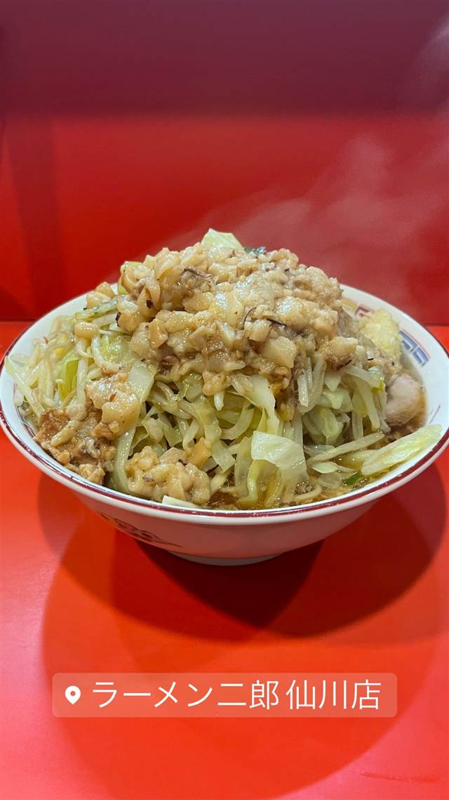

ラーメン二郎 仙川店
直系3番目の老舗、漆黒の非乳化スープ「仙川ブラック」
ラーメン二郎 仙川店
ラーメン二郎仙川店は1995年、直系の中でも早い時期に開店した老舗。初代亡き後は助手だった人物が三田本店で修行して継承し、「仙川ブラック」と呼ばれる漆黒の非乳化スープを受け継いでいる。
TRIVIA
豆知識
- 直系二郎の中で3番目にオープンした古参店
- 初代店主は慶應の応援指導部OBという異色の経歴だった
REVIEWS
世間の評判
90.7ラーメンDB
非乳化スープと塊チャーシューの安定感
- 非乳化系のスープと塊で入る食べ応えのあるチャーシューが評価されている
- 値上げや並びの人数の変化を気にして通い続けるリピーターの声がある
- 夜のみの営業で仕事帰りなど訪問のハードルを感じるという声もある
ラーメンデータベース 口コミ425件・最新 2026-08
| 創業 | 1995年10月16日創業 |
|---|---|
| 系譜 | 「ラーメン二郎」直系店で、直系の中でも3番目に開店した歴史ある一軒。 |
| 看板 | 非乳化の黒いスープの二郎系ラーメン（豚と野菜の山盛り） |
| こだわり | 「仙川ブラック」と呼ばれる漆黒の非乳化スープが特徴で、醤油ダレに生姜のアクセント、豚出汁を効かせている。麺は平打ちの硬めの太麺。 |
| どこから | 23区の外れ・近郊 |
| 行くなら | 夜だけ 行列 |
| 予算 | 昼 ～¥999 夜 ～¥999 |
| 定休日 | 日曜・祝日 |
| 場所 | 仙川 東京都調布市仙川町 |
| メモ | 京王線仙川駅徒歩1分、夜のみ営業。店内10席ほどと小さいが回転が速い。行列必至の人気店。 |
食べたもの：二郎系ラーメン
NEARBY
近い店・同じ系統の店
-
 ★
二郎系(直系) ひばりヶ丘
ラーメン二郎 ひばりヶ丘駅前店
笑顔の店主が迎える、二郎初心者にも入りやすい直系店
昼 ～¥999 夜 ～¥999
★
二郎系(直系) ひばりヶ丘
ラーメン二郎 ひばりヶ丘駅前店
笑顔の店主が迎える、二郎初心者にも入りやすい直系店
昼 ～¥999 夜 ～¥999
-
 ★
二郎系(直系) 京王堀之内駅
ラーメン二郎 八王子野猿街道店2
父も二郎系店主だった、父子二代にわたる直系二郎
昼 ~¥999 夜 ~¥999
★
二郎系(直系) 京王堀之内駅
ラーメン二郎 八王子野猿街道店2
父も二郎系店主だった、父子二代にわたる直系二郎
昼 ~¥999 夜 ~¥999
-
 ★
二郎系(直系) 伊勢佐木長者町駅
ラーメン二郎 横浜関内店
二郎の「汁なし」を早くから始めた発祥格の直系店
昼 ～¥999 夜 ～¥999
★
二郎系(直系) 伊勢佐木長者町駅
ラーメン二郎 横浜関内店
二郎の「汁なし」を早くから始めた発祥格の直系店
昼 ～¥999 夜 ～¥999
-
 ★
二郎系(直系) 松戸
ラーメン二郎 松戸駅前店
元は「ラーメンショップ」だった店が二郎に転換、三代続く味
昼 ～¥999 夜 ～¥999
★
二郎系(直系) 松戸
ラーメン二郎 松戸駅前店
元は「ラーメンショップ」だった店が二郎に転換、三代続く味
昼 ～¥999 夜 ～¥999
-
 ★
二郎系(直系) 神保町
ラーメン二郎 神田神保町店
三田本店直系の乳化系濃厚豚骨醤油が自慢の二郎ラーメン
昼 ¥1,000～¥1,999
★
二郎系(直系) 神保町
ラーメン二郎 神田神保町店
三田本店直系の乳化系濃厚豚骨醤油が自慢の二郎ラーメン
昼 ¥1,000～¥1,999
-
 ★
二郎系(直系) 中山駅
ラーメン二郎 中山駅前店
非乳化スープと柔らかめの極太麺「デロ麺」が名物の二郎直系
昼 ¥1,000～¥1,999 夜 ¥1,000～¥1,999
★
二郎系(直系) 中山駅
ラーメン二郎 中山駅前店
非乳化スープと柔らかめの極太麺「デロ麺」が名物の二郎直系
昼 ¥1,000～¥1,999 夜 ¥1,000～¥1,999